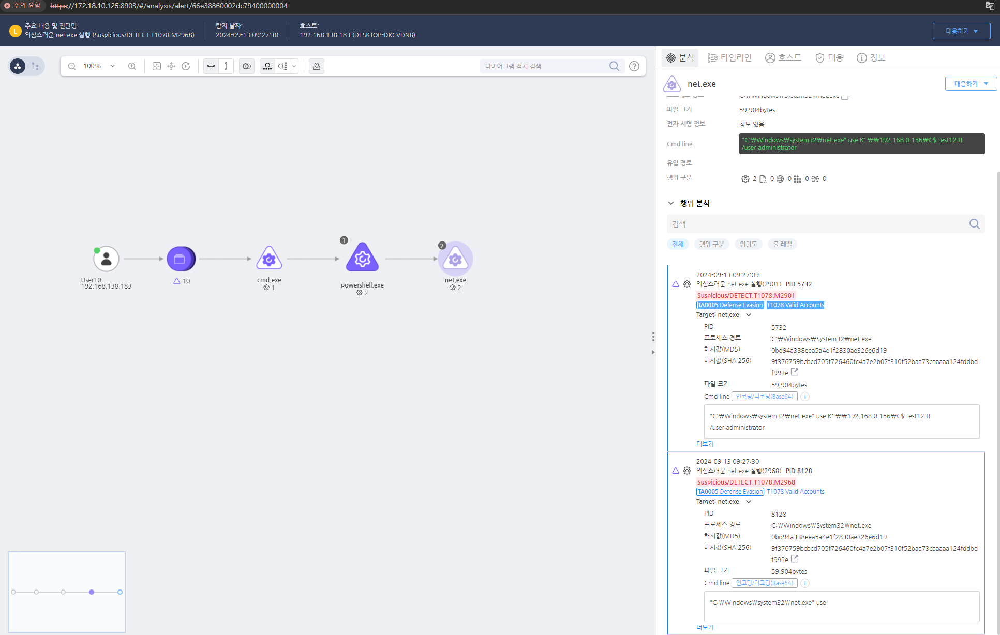

T1021.003.01 Remote Services: Distributed Component Object Model
D3FEND
MITRE ATT&CK 액션을 기준으로 대응 방안을 작성
Detection
Action = "ProcessCreate" AND
CurrentProcess = "powershell.exe" AND
TargetProcess = "net.exe" AND
Cmdline = "use"
Detection(EDR)

Response
원격 접속 로그를 모니터링하고 비정상적인 원격 연결 시도를 즉시 조사하여 대응합니다.
Mitigations
파일 전송 서비스 제한
- 파일 공유 비활성화: 원격 파일 복사를 위한 서비스(예: SMB, FTP, NFS)를 비활성화하거나, 사용되지 않는 프로토콜을 차단하여 공격자가 이를 통해 파일을 복사할 수 없도록 합니다.
- RDP 및 SMB 포트 차단: RDP와 SMB와 같은 파일 전송에 사용되는 포트(기본적으로 TCP 3389 및 TCP 445)를 외부 네트워크에서 접근할 수 없도록 방화벽을 설정합니다.
파일 전송 암호화 및 인증 강화
- 파일 전송 암호화: 원격 파일 복사가 발생할 때 암호화된 프로토콜(예: SFTP 또는 FTPS)을 사용하여, 전송 중인 데이터가 탈취되지 않도록 보호합니다.
- 강력한 인증 사용: 파일 전송 서비스에는 다단계 인증(MFA)을 사용하여 파일 복사 작업이 불법적으로 수행되지 않도록 보안 계층을 추가합니다.
파일 공유 권한 제한
- 파일 공유 권한 최소화: SMB, NFS, FTP와 같은 파일 공유 서비스를 사용할 때, 읽기/쓰기 권한을 최소화하여 불필요한 공유를 차단합니다. 공격자가 복사하려는 파일에 대한 접근을 어렵게 만듭니다.
- 파일 시스템 권한 관리: NTFS(Windows) 또는 ext4(Linux)와 같은 파일 시스템의 권한 설정을 통해, 민감한 파일에 대한 접근을 제한합니다.
보안 프로토콜 및 접근 제어
- 보안 파일 공유 프로토콜 사용: SMBv1을 비활성화하고, SMBv2 또는 SMBv3와 같은 더 안전한 파일 공유 프로토콜을 사용합니다. SMBv1은 여러 보안 취약점이 있어 공격자가 악용할 수 있습니다.
- VPN 및 SSH 사용: 원격 파일 복사를 허용해야 할 경우, VPN 또는 SSH(Secure Shell)를 사용하여 보안된 통신 경로를 통해 파일을 전송합니다. 이를 통해 원격 서버와의 연결을 암호화하여 안전하게 파일을 복사할 수 있습니다.
파일 무결성 검사
- 파일 무결성 검사: 파일 전송 시, 해시 값(예: MD5, SHA-256) 비교를 통해 파일이 손상되지 않고 안전하게 전송되었는지 확인합니다.
- 무결성 검증 시스템: HIDS(Host-based Intrusion Detection System) 또는 EDR(Endpoint Detection and Response) 솔루션을 사용하여 파일 복사 활동을 모니터링하고, 비정상적인 활동을 탐지합니다.
네트워크 세분화 및 접근 제어
- 네트워크 세분화: 원격 시스템 간의 파일 전송을 제한하려면 네트워크를 세분화하고, 중요 시스템을 별도의 VLAN 또는 서브넷에 배치하여 원격 파일 복사를 통한 접근을 방지합니다.
- 파일 전송에 대한 IP 접근 제어: IP 화이트리스트 또는 ACL(액세스 제어 목록)을 사용하여 신뢰된 IP 주소만 파일 전송 서비스에 접근할 수 있도록 제한합니다.
로그 분석 및 모니터링
- 원격 파일 복사 로그 모니터링: Windows Event Logs, Sysmon 및 Linux Syslog를 사용하여 원격 파일 복사 작업을 감시하고 의심스러운 활동을 기록합니다.
- 실시간 모니터링: SIEM(Security Information and Event Management) 시스템을 통해 원격 파일 전송 관련 로그를 실시간으로 모니터링하고, 이상 징후를 감지하여 알림을 받을 수 있습니다.
보안 패치 및 취약점 관리
- 정기적인 보안 패치 적용: 파일 전송 서비스와 관련된 취약점을 방지하기 위해 Windows와 Linux 시스템에 대한 보안 패치를 주기적으로 적용합니다.
- 취약점 스캔: 파일 전송 서비스를 제공하는 시스템에 대해 취약점 스캐닝 도구를 사용하여 알려진 취약점에 대한 점검을 수행하고, 이를 기반으로 패치를 적용합니다.
권한 있는 사용자 및 계정 관리
- 특권 계정 관리: 파일 전송 작업을 수행하는 사용자 계정에 대해 최소 권한 원칙을 적용하고, 관리자 권한을 부여하지 않습니다. 이를 통해 공격자가 관리자 권한을 가진 계정을 악용할 가능성을 줄입니다.
- 계정 잠금 정책: 계정 잠금 정책을 설정하여 비정상적인 로그인 시도가 발생할 경우 계정을 잠금으로써 원격 파일 복사 시도가 악용되지 않도록 합니다.
Affected Techniques
Action 실행시 함꼐 영향을 받는 다른 Techniqes
| ATT&CK |
| T1059.001 |
| T1049.000 |
| T1135.000 |
| T1070.005 |
| D3FEND |
| D3-NTA Network Traffic Analysis |
| D3-NTF Network Traffic Filtering |
| D3-ITF Inbound Traffic Filtering |
| D3-OTF Outbound Traffic Filtering |